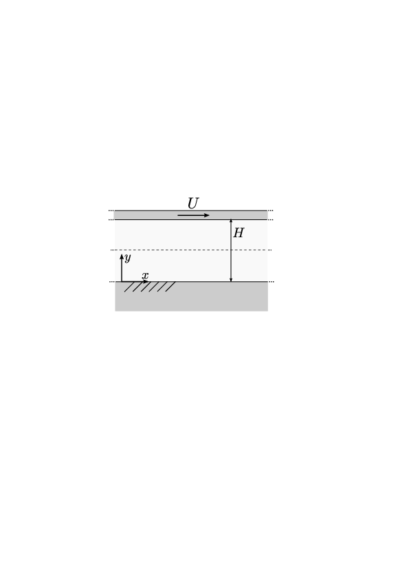

6.5.1. Exercise 6.1#
In un canale piano, di lunghezza e apertura infinita, orizzontale, di altezza \(H=1.51\ mm\), delimitato da una parete inferiore fissa e da una parete superiore mobile con velocità orizzontale, costante e positiva \(U=0.31\ m/s\). scorre acqua in condizioni standard. Per quale valore del gradiente di pressione \(G_P = -\partial P/\partial x\) la portata nel canale risulta nulla? \newline Si trascurino le forze di volume.

Semplificazione delle equazioni di NS in coordinate cartesiane per descrivere la corrente in un canale piano infinito messo in moto da un gradiente di pressione (corrente di Poiseuille) e dal trascinamento dovuto al movimento di una parete del canale (corrente di Newton).
In questo problema, la corrente nel canale ha due «forzanti»: il moto a (velocità costante) della parete superiore e il gradiente di pressione \(G_P\) lungo il canale. Il problema chiede di trovare il valore di \(G_P\) tale che la portata nel canale sia nulla quando i due effetti si combinano. Il problema viene risolto ricavando il profilo di velocità in funzione del gradiente di velocità dalle equazioni di NS opportunamente semplificate e successivamente il valore del gradiente di pressione necessario ad avere portata nulla. La geometria del problema suggerisce di utilizzare un sistema di coordinate cartesiane.
Scrittura delle equazioni di NS in coordinate cartesiane in 2 dimensioni. $$\begin{cases} \dfrac{\partial u}{\partial t} + u \dfrac{\partial u}{\partial x}
v \dfrac{\partial u}{\partial y} - \nu \left( \dfrac{\partial^2 u}{\partial x^2} + \dfrac{\partial^2 u}{\partial y^2} \right)
\dfrac{1}{\rho} \dfrac{\partial p}{\partial x} = f_x \ \dfrac{\partial v}{\partial t} + u \dfrac{\partial v}{\partial x}
v \dfrac{\partial v}{\partial y} - \nu \left( \dfrac{\partial^2 v}{\partial x^2} + \dfrac{\partial^2 v}{\partial y^2} \right)
\dfrac{1}{\rho} \dfrac{\partial p}{\partial y} = f_y \ \dfrac{\partial u}{\partial x} + \dfrac{\partial v}{\partial y} = 0 \end{cases}$$
Semplificazione delle equazioni di NS per il problema considerato. Vengono fatte le seguenti ipotesi:
problema stazionario: \(\dfrac{\partial}{\partial t} = 0\);
direzione \(x\) omogenea (canale infinito in direzione \(x\)): \(\dfrac{\partial u}{\partial x} = \dfrac{\partial v}{\partial x} = 0\);
non si può dire altrettanto della pressione, a causa del ruolo che questa ha nelle equazioni di NS incomprimibili. Il campo di pressione può essere interpretato come un moltiplicatore di Lagrange necessario a imporre il vincolo di incomprimibilità. Inoltre, ad eccezione di alcune condizioni al contorno, non appare mai direttamente come pressione \(p\) ma solamente con le sue derivate spaziali. Da un punto di vista più fisico, la differenza di pressione lungo il canale è la forzante che mette in moto il fluido in una corrente di Poiseuille.
la condizione \(\dfrac{\partial u}{\partial x} = 0\) inserita nel vincolo di incomprimibilità, implica \(\dfrac{\partial v}{\partial y}=0\); poichè \(\dfrac{\partial v}{\partial x}=\dfrac{\partial v}{\partial y}=0\) segue che \(v = \text{cost} = 0\), poiché è nulla a parete per la condizione al contorno di adesione, \(\mathbf{u} = \mathbf{0}\).
no forze di volume: \(\mathbf{f} = 0\).
Le equazioni di NS possono essere semplificate $\(\begin{cases} \nu \dfrac{\partial^2 u}{\partial y^2} = \dfrac{\partial p}{\partial x} \\ \dfrac{\partial p}{\partial y} = 0 \end{cases}\)$
Dalla seconda segue che la pressione può essere funzione solo di \(x\). Nella prima, il termine a sinistra dell’uguale è funzione solo di \(y\); quello di destra può essere funzione solo di x: l’uguaglianza implica che entrambi i membri sono costanti. Definiamo questa costante come \(G_P = - \dfrac{\partial p}{\partial x}\): si noti che questo è il «gradiente di pressione» lungo il canale, cambiato di segno. $\(\begin{cases} - \mu u''(y) = G_P & y \in[0,H] \\ u(0) = 0 \\ u(H) = U \end{cases}\)$
Soluzione dell’equazione differenziale con dati al contorno: si integra due volte e si impongono le condizioni al contorno per ottenere la componente \(u\) del campo di velocità. $\(\Rightarrow u(y) = -\dfrac{G_P}{2 \mu} y^2 + \left( \dfrac{G_P}{2 \mu}H + \dfrac{U}{H} \right) y \ .\)$
Calcolo della portata come integrale della velocità. $\(Q = \int_{0}^{H} u(y) dy = \dfrac{G_P}{12 \mu} H^3 + \dfrac{1}{2} U H\)\( Infine, imponendo la condizione di portata nulla \)Q=0\(, si ottiene il valore di \)G_P\(: \)\(G_P = -6\dfrac{\mu U}{H^2} \qquad \Rightarrow \qquad G_P = - 930 Pa/m\)$